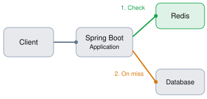
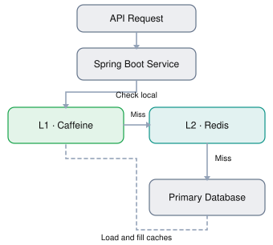

Caching is one of the most important concepts in backend engineering, distributed systems, database optimization, and high-performance application design.
We’ll cover caching from fundamentals to production-level implementations, including algorithms written from scratch in Java and a Spring Boot application using Redis.
Caching is a technique of storing copies of frequently or recently accessed data in a faster storage layer so that subsequent requests can be served without repeatedly accessing the original, usually slower, data source.
Caching is the process of storing frequently accessed data in temporary storage (cache) to serve future requests faster without repeatedly hitting the main database or service.
Cache stores frequently accessed data for faster access and reduced database load.
A cache sits between the consumer of data and its original source.
The cache is a high-speed storage layer that sits between the application and the original source of the data, such as a database, a file system, or a remote web service. When data is requested by the application, it is first checked in the cache. If the data is found in the cache, it is returned to the application. If the data is not found in the cache, it is retrieved from its original source, stored in the cache for future use, and returned to the application.
Caching can be used for various types of data, such as web pages, database queries, API responses, images, and videos. The goal of caching is to reduce the number of times data needs to be fetched from its original source, which can result in faster processing and reduced latency.
For example, imagine an e-commerce application where customers repeatedly request product details.
Without caching:
Every request potentially requires a database query.
With caching:

The application checks Redis first. It queries the database only when necessary.
Suppose retrieving a product directly from the database takes 40 ms, while retrieving it from Redis takes 2 ms.
Database lookup
40 ms
Illustrative latency
Redis lookup
2 ms
Illustrative latency
In this hypothetical case, the cached retrieval is 20 times faster. Actual improvements depend on the workload, network, serialization, and database performance.
Key terminology and concepts
1. Cache: A temporary storage location for data or computation results, typically designed for fast access and retrieval.
2. Cache hit: When a requested data item or computation result is found in the cache.
3. Cache miss: When a requested data item or computation result is not found in the cache and needs to be fetched from the original data source or recalculated.
4. Cache eviction: The process of removing data from the cache, typically to make room for new data or based on a predefined cache eviction policy.
5. Cache staleness: When the data in the cache is outdated compared to the original data source.
| Term | Meaning |
|---|---|
| Hit ratio | Fraction of cache lookups that are hits |
| TTL | Time to Live: duration before cached data expires |
| Invalidation | Marking or removing data that should no longer be trusted |
| Warm cache | Cache already populated with useful data |
| Cold cache | Cache empty or not sufficiently populated |
| Working set | Data actively accessed during a particular period |
Caching can improve several aspects of system performance:
However, caching introduces additional state, complexity, and consistency problems. A fast response containing incorrect data may be worse than a slower, accurate response.
Caching can be implemented in various ways, including in-memory caching, disk caching, database caching, and CDN caching. In-memory caching stores data in the main memory of the computer, which is faster to access than disk storage. Disk caching stores data on the hard disk, which is slower than main memory but faster than retrieving data from a remote source. Database caching stores frequently accessed data in the database itself, reducing the need to access external storage. CDN caching stores data on a distributed network of servers, reducing the latency of accessing data from remote locations.
Caching can be classified by where the data is stored and what is being cached.
| Cache type | Location | Example |
|---|---|---|
| CPU cache | Processor L1/L2/L3 | Frequently accessed memory |
| Application/local cache | Application process | Java HashMap, Caffeine |
| Distributed cache | Separate shared cache service | Redis, Memcached |
| Database cache | Database engine | PostgreSQL shared buffers |
| Browser cache | User’s browser | CSS, JavaScript, images |
| CDN/edge cache | Edge servers near users | Static assets, public API responses |
| HTTP reverse-proxy cache | Gateway/proxy | Varnish, Nginx |
| Query/result cache | Application or database layer | Cached analytics report |
Local cache vs distributed cache
Local cache (L1)
Very low lookup overhead, but each instance has independent data.
Distributed cache (L2)
Shared data across instances, but requires network access.
Local caching is an excellent choice for immutable configuration, lookup tables, and data where each application instance can tolerate independent cache contents.
Distributed caching is particularly useful for horizontally scaled microservices that need access to the same cached values.
A combination of both is called multi-level caching:
L1 (Caffeine) → L2 (Redis) → Database
The fastest layer is checked first. The challenge is keeping the layers sufficiently consistent.
Caching strategies determine when data enters the cache, how reads work, and how updates are handled.
4.1 Cache-aside (Lazy Loading)
The application manages the cache explicitly.
Read algorithm:
sequenceDiagram
autonumber
participant C as Client
participant A as Application
participant R as Redis
participant D as Database
C->>A: GET /products/42
A->>R: GET products::42
alt Cache Hit
R-->>A: Cached Product
else Cache Miss
R-->>A: No Value
A->>D: SELECT product WHERE id=42
D-->>A: Product
A->>R: SET product with TTL
end
A-->>C: Product ResponseA minimal Java-style implementation:
public Product getProduct(long id) {
Product cached = cache.get(id);
if (cached != null) {
return cached;
}
Product product = database.findById(id);
if (product != null) {
cache.put(id, product);
}
return product;
}For updates, a common approach is:
public void updateProduct(Product product) {
database.save(product);
cache.remove(product.getId());
}For this simplified example, assume the database write commits before the eviction and that there are no concurrent read/write races. A production implementation must handle those concerns.
Advantages: Only accessed data is cached, the cache can be rebuilt, and the application controls the cache policy.
Disadvantages: The first request is slower, application logic must manage invalidation, and concurrent misses can overload the database.
4.2 Read-through caching
In read-through caching, the application interacts with a cache abstraction that automatically loads data from the database on a miss.
Application
|
v
Cache.get(key)
|
+-- Hit --> Return cached value
|
+-- Miss --> Cache loader queries database
|
+--> Store result
+--> Return resultConceptual Java example:
LoadingCache<Long, Product> cache = Caffeine.newBuilder()
.maximumSize(1000)
.build(id -> repository.findById(id).orElse(null));
Product product = cache.get(42L);This example uses Caffeine to demonstrate the interface. The cache automatically invokes the loader on a miss.
The main difference is who owns the loading logic: in cache-aside, the application loads explicitly; in read-through, the cache abstraction performs the loading.
4.3 Write-through caching
Every write updates the authoritative database and the cache synchronously.
Application
|
v
Write-through caching layer
|
+--> Database write
|
+--> Cache update
|
v
Return write resultThe operation should report success only after the required writes succeed.
Advantages: Frequently accessed updated data can be served immediately without another database read.
Disadvantages: Additional write latency, unnecessary caching of cold data, and difficulty handling partial failures. Writing to a database and Redis is not automatically atomic.
4.4 Write-behind (Write-back) caching
Writes are accepted into the cache or a buffer and later propagated asynchronously to the database.
Client
|
v
Cache / Durable Write Buffer
| |
v v
Fast response Async worker
|
v
DatabaseThis can produce excellent write throughput by batching writes.
However, acknowledged writes may be lost if they only exist in volatile cache memory when a failure occurs. Reliable write-behind systems typically require a durable log or queue, replay, retry, and idempotency.
Use it selectively for workloads such as telemetry, buffered counters, and noncritical aggregate updates. Ordinary Redis cache-aside usage is not write-behind.
4.5 Write-around caching
Writes go directly to the database without populating the cache.
Write: Application → Database
Read: Application → Cache → Database on missThe application must also invalidate an existing cached value for the affected key.
This is useful for write-heavy workloads where newly written data is unlikely to be read soon.
Strategy comparison
| Strategy | Reads | Writes | Suitable for |
|---|---|---|---|
| Cache-aside | Application checks and fills cache | DB + invalidate or update cache | General microservices |
| Read-through | Cache loader fetches missing data | Separate write handling | Read-heavy applications |
| Write-through | Cache serves reads | DB and cache updated synchronously | Frequently read, updated data |
| Write-behind | Cache serves recent values | Buffered, asynchronous DB write | High write throughput |
| Write-around | Cache on subsequent reads | DB directly, invalidate old copy | Write-heavy, cold data |
These strategies can be combined. For example, use cache-aside for reads and database-first cache invalidation for writes.
A cache has limited capacity. When it becomes full, it must decide which entry to remove to make space for new data.
This decision is controlled by an eviction policy.
Suppose a cache can hold only three items:
Capacity = 3
Cache = [A, B, C]
New entry D arrives.
Which entry should be removed?Different eviction algorithms make different decisions.
| Algorithm | Full name | Eviction decision | Typical complexity |
|---|---|---|---|
| FIFO | First In, First Out | Oldest inserted item | O(1) |
| LRU | Least Recently Used | Least recently accessed item | O(1) |
| LFU | Least Frequently Used | Item with fewest accesses | O(1) average with suitable structures |
| MRU | Most Recently Used | Most recently accessed item | O(1) |
| Random | Random Replacement | Randomly chosen item | O(1) |
| CLOCK | Second Chance | Approximate LRU using reference bits | O(1) amortized |
| TTL | Time to Live | Item whose expiration time has passed | Depends on implementation |
| TinyLFU | Approximate frequency-based admission | Determines which data deserves cache space | Implementation-dependent |
Important distinction: TTL expiration is not the same thing as capacity-based eviction. A cache can use LRU to handle memory pressure and TTL to discard old values.
5.1 FIFO — First In, First Out
FIFO removes the entry that was inserted earliest, regardless of how often it has been accessed.
FIFO example — capacity 3
FIFO is easy to implement with a HashMap and a queue.
public class FIFOCache<K, V> {
private int capacity;
private Map<K, V> map = new HashMap<>();
private Queue<K> queue = new ArrayDeque<>();
public FIFOCache(int capacity) {
if (capacity <= 0) throw new IllegalArgumentException();
this.capacity = capacity;
}
public V get(K key) { return map.get(key); }
public void put(K key, V value) {
Objects.requireNonNull(key);
Objects.requireNonNull(value);
if (map.containsKey(key)) {
map.put(key, value);
return;
}
if (map.size() == capacity) {
K oldest = queue.remove();
map.remove(oldest);
}
queue.add(key);
map.put(key, value);
}
}The example assumes non-null keys and values.
Drawback: Reading an entry repeatedly does not protect it from eviction. Even a very popular item can be removed merely because it was inserted first.
5.2 LRU — Least Recently Used
LRU evicts the item that has not been accessed for the longest time.
LRU is based on temporal locality: data accessed recently is likely to be accessed again.
Consider capacity 3:
Interactive LRU simulation
Cache initially empty
How to implement O(1) LRU
Use two data structures together:
HashMap<K, Node> for O(1) average lookup.Keep the most recently used item near the head and the least recently used item near the tail.
HEAD <-> C <-> A <-> B <-> TAIL
^ ^
MRU LRUThe HashMap locates a node; the linked list maintains recency.
Java implementation from scratch
public class LRUCache<K, V> {
private class Node {
K key;
V value;
Node prev, next;
Node(K key, V value) {
this.key = key;
this.value = value;
}
}
private int capacity;
private Map<K, Node> map = new HashMap<>();
private Node head = new Node(null, null);
private Node tail = new Node(null, null);
public LRUCache(int capacity) {
if (capacity <= 0) throw new IllegalArgumentException();
this.capacity = capacity;
head.next = tail;
tail.prev = head;
}
public V get(K key) {
Node node = map.get(key);
if (node == null) {
return null;
}
removeNode(node); # Recently accessed: move to front.
addToFront(node);
return node.value;
}
public void put(K key, V value) {
Objects.requireNonNull(key);
Objects.requireNonNull(value);
Node existing = map.get(key);
if (existing != null) {
existing.value = value;
removeNode(existing);
addToFront(existing);
return;
}
if (map.size() == capacity) {
Node lru = tail.prev; # Least recently used node.
removeNode(lru);
map.remove(lru.key);
}
Node newNode = new Node(key, value);
addToFront(newNode);
map.put(key, newNode);
}
private void removeNode(Node node) {
node.prev.next = node.next;
node.next.prev = node.prev;
}
private void addToFront(Node node) {
node.next = head.next;
node.prev = head;
head.next.prev = node;
head.next = node;
}
}Usage:
LRUCache<Integer, String> cache = new LRUCache<>(3);
cache.put(1, "A");
cache.put(2, "B");
cache.put(3, "C");
cache.get(1); # 1 becomes most recent
cache.put(4, "D"); # Evicts 2
System.out.println(cache.get(2)); # null
System.out.println(cache.get(1)); # AComplexity:
| Operation | Time |
|---|---|
get() | O(1) average |
put() | O(1) average |
| Remove least recent | O(1) |
| Memory | O(capacity) |
This implementation is not thread-safe. A real concurrent cache must synchronize access to both its map and linked list, or use a production library.
5.3 LFU — Least Frequently Used
LFU evicts the item with the lowest access count.
Suppose capacity is 3:
| Key | Access frequency |
|---|---|
| A | 8 |
| B | 2 |
| C | 5 |
When D is inserted, B is evicted because it has the lowest frequency.
If multiple items have the same frequency, a common tie-breaking rule is LRU.
O(1) LFU design
Use two maps:
Map<K, Entry<V>> values;
Map<Integer, LinkedHashSet<K>> frequencyBuckets;The first stores each value and its frequency. The second groups keys by frequency; insertion order inside each group supports the LRU tie-break.
public class LFUCache<K, V> {
private static class Entry<V> {
V value;
int frequency = 1;
Entry(V value) { this.value = value; }
}
private int capacity;
private int minFrequency = 0;
private Map<K, Entry<V>> values = new HashMap<>();
private Map<Integer, LinkedHashSet<K>> buckets = new HashMap<>();
public LFUCache(int capacity) {
if (capacity <= 0) throw new IllegalArgumentException();
this.capacity = capacity;
}
public V get(K key) {
Entry<V> entry = values.get(key);
if (entry == null) {
return null;
}
increaseFrequency(key, entry);
return entry.value;
}
public void put(K key, V value) {
Objects.requireNonNull(key);
Objects.requireNonNull(value);
Entry<V> existing = values.get(key);
if (existing != null) {
existing.value = value;
increaseFrequency(key, existing);
return;
}
if (values.size() == capacity) {
LinkedHashSet<K> keys = buckets.get(minFrequency);
K victim = keys.iterator().next(); # Oldest key among least-frequent keys.
keys.remove(victim);
values.remove(victim);
if (keys.isEmpty()) {
buckets.remove(minFrequency);
}
}
values.put(key, new Entry<>(value));
buckets.computeIfAbsent(1, ignored -> new LinkedHashSet<>()).add(key);
minFrequency = 1;
}
private void increaseFrequency(K key, Entry<V> entry) {
int oldFrequency = entry.frequency;
LinkedHashSet<K> oldBucket = buckets.get(oldFrequency);
oldBucket.remove(key);
if (oldBucket.isEmpty()) {
buckets.remove(oldFrequency);
if (minFrequency == oldFrequency) {
minFrequency++;
}
}
entry.frequency++;
buckets.computeIfAbsent(entry.frequency, ignored -> new LinkedHashSet<>()).add(key);
}
}Usage:
LFUCache<Integer, String> cache = new LFUCache<>(3);
cache.put(1, "A");
cache.put(2, "B");
cache.put(3, "C");
cache.get(1);
cache.get(1);
cache.get(2);
cache.put(4, "D"); # Evicts 3
System.out.println(cache.get(3)); # nullThe LFU implementation has O(1) average operations under normal hash-table assumptions.
Its main weakness is that frequency history can become outdated. A once-popular entry may remain cached long after it stops being useful. Production LFU variants often use frequency aging or approximate frequency counters.
5.4 TTL — Time to Live
TTL defines how long a cached entry may remain valid following a particular event, usually its insertion or last write.
For example:
Product cached at 10:00:00
TTL = 5 minutes
Before 10:05:00: Eligible to be served
At/after 10:05:00: ExpiredThere are two common expiration styles:
A simple lazy-expiration implementation:
public class TTLCache<K, V> {
private record Entry<V>(V value, long writtenAt) {}
private Map<K, Entry<V>> cache = new HashMap<>();
private long ttlNanos;
public TTLCache(Duration ttl) {
if (ttl.isZero() || ttl.isNegative()) throw new IllegalArgumentException();
ttlNanos = ttl.toNanos();
}
public void put(K key, V value) { cache.put(key, new Entry<>(value, System.nanoTime())); }
public V get(K key) {
Entry<V> entry = cache.get(key);
if (entry == null) return null;
long elapsed = System.nanoTime() - entry.writtenAt();
if (elapsed >= ttlNanos) {
cache.remove(key);
return null;
}
return entry.value();
}
}Using System.nanoTime() is suitable for measuring elapsed time within one running process. It is not a timestamp to persist or exchange across machines.
The code implements lazy expiration: expired entries are removed when read. Therefore expired values that are never requested can remain in memory. Production caches also employ periodic cleanup or other expiration mechanisms.
5.5 CLOCK (Second-Chance Algorithm)
CLOCK approximates LRU with less bookkeeping than a full recency-ordered linked list.
Each cached entry has a reference bit:
Slot: 0 1 2 3
Cached item: A B C D
Reference bit: 1 0 1 1
^
Clock handWhen eviction is required:
1, reset it to 0 and advance the hand.0, evict that entry.1.A cache hit sets the corresponding bit to 1.
The downloadable project includes a complete array-based CLOCK implementation with a hash map for locating slots.
LRU vs LFU: Which is better?
Example access patterns
Recency-based workload
Illustrative changing access patterns
Recently accessed entries matter most. LRU is often suitable.
Frequency-based workload
Illustrative stable popularity
A few keys dominate demand. LFU can retain them more effectively.
LRU is typically easier to reason about and reacts quickly to changing access patterns. LFU can perform better when stable, frequently accessed keys dominate the workload.
Modern cache libraries may combine recency, frequency estimation, and admission decisions rather than relying on a pure textbook algorithm.
Java Caching + Spring Boot Project
Java 17+ · Spring Boot 4.1.2 · Redis · H2 · Maven
Download complete source code (ZIP)
Includes FIFO, LRU, LFU, TTL, CLOCK, runnable algorithm checks, and a Spring Boot REST application with Redis caching.
I compiled and ran the plain Java algorithm examples successfully. The Spring Boot source follows the verified current APIs, but I couldn’t execute the Maven application in this environment.
Now let’s implement caching in a practical backend application.
We’ll build a product API using:
Spring Boot 4.1.2 is a stable release and supports the caching infrastructure used here.
7.1 Project architecture
flowchart TD
A["REST API Client"] --> B["ProductController"]
B --> C["ProductService"]
C --> D{"Spring Cache"}
D -->|"Cache hit"| E[("Redis")]
D -->|"Cache miss"| F["Repository"]
F --> G[("H2 Database")]
G --> F
F -->|"Return Product"| C
C -->|"Populate Cache"| E
C --> B
B --> AFor GET /products/1, Spring’s caching proxy checks Redis before invoking the service method.
For updates and deletes, the application must maintain the corresponding cached entry.
7.2 Maven dependencies
The full pom.xml is included in the ZIP. Its key dependencies are:
<parent>
<groupId>org.springframework.boot</groupId>
<artifactId>spring-boot-starter-parent</artifactId>
<version>4.1.2</version>
<relativePath/>
</parent>
<properties>
<java.version>17</java.version>
</properties>
<dependencies>
<dependency>
<groupId>org.springframework.boot</groupId>
<artifactId>spring-boot-starter-webmvc</artifactId>
</dependency>
<dependency>
<groupId>org.springframework.boot</groupId>
<artifactId>spring-boot-starter-data-jpa</artifactId>
</dependency>
<dependency>
<groupId>org.springframework.boot</groupId>
<artifactId>spring-boot-starter-data-redis</artifactId>
</dependency>
<dependency>
<groupId>org.springframework.boot</groupId>
<artifactId>spring-boot-starter-cache</artifactId>
</dependency>
<dependency>
<groupId>org.springframework.boot</groupId>
<artifactId>spring-boot-starter-validation</artifactId>
</dependency>
<dependency>
<groupId>com.h2database</groupId>
<artifactId>h2</artifactId>
<scope>runtime</scope>
</dependency>
</dependencies>7.3 Configure Redis and H2
src/main/resources/application.properties
spring.application.name=cachedemo
# Database
spring.datasource.url=jdbc:h2:mem:cachingdb;DB_CLOSE_DELAY=-1
spring.datasource.driver-class-name=org.h2.Driver
spring.jpa.hibernate.ddl-auto=update
spring.jpa.open-in-view=false
# Cache
spring.cache.type=redis
# Redis connection
spring.data.redis.host=localhost
spring.data.redis.port=6379
# Logging
logging.level.com.example.cachedemo=INFO7.4 Configure Redis CacheManager
CacheConfig.java
@Configuration
@EnableCaching
public class CacheConfig {
@Bean
public RedisCacheManager cacheManager(RedisConnectionFactory factory) {
var serializer = new JacksonJsonRedisSerializer<>(ProductResponse.class);
var config = RedisCacheConfiguration.defaultCacheConfig()
.entryTtl(Duration.ofMinutes(10))
.disableCachingNullValues()
.computePrefixWith(name -> "cachedemo:" + name + "::")
.serializeValuesWith(RedisSerializationContext.SerializationPair.fromSerializer(serializer));
return RedisCacheManager.builder(factory)
.cacheDefaults(config)
.withInitialCacheConfigurations(Map.of("products", config))
.disableCreateOnMissingCache()
.build();
}
}What this configuration does:
| Configuration | Purpose |
|---|---|
@EnableCaching | Activates Spring’s cache interceptor |
RedisCacheManager | Uses Redis as cache storage |
entryTtl(10 minutes) | Expires cached entries after ten minutes |
disableCachingNullValues() | Prevents storing null values |
computePrefixWith(...) | Creates namespaced keys |
| JSON serializer | Stores product responses in JSON instead of Java native serialization |
disableCreateOnMissingCache() | Rejects undeclared cache regions |
This example intentionally configures one cache, products, containing ProductResponse objects. Other cache regions might need different serializers and TTLs.
Spring Data Redis supports customization of TTL, key prefixes, and serialization through RedisCacheConfiguration.
7.5 Entity and repository
The product entity has three fields: id, name, and price.
@Entity
public class Product {
@Id
@GeneratedValue(strategy = GenerationType.IDENTITY)
private Long id;
private String name;
private BigDecimal price;
protected Product() {}
public Product(String name, BigDecimal price) {
this.name = name;
this.price = price;
}
# Getters and setters
}Repository:
public interface ProductRepository extends JpaRepository<Product, Long> {}Our cached response will be an immutable DTO:
public record ProductResponse(Long id, String name, BigDecimal price) {
public static ProductResponse from(Product p) { return new ProductResponse(p.getId(), p.getName(), p.getPrice()); }
}Caching a DTO rather than a JPA entity avoids problems involving Hibernate proxies, lazy relationships, and exposing persistence objects through Redis serialization.
7.6 Service layer: @Cacheable, @CachePut, and @CacheEvict
ProductService.java
@Service
public class ProductService {
private static Logger log = LoggerFactory.getLogger(ProductService.class);
private ProductRepository repository;
public ProductService(ProductRepository repository) { this.repository = repository; }
@Cacheable(cacheNames = "products", key = "#id") # READ: cache-aside behavior
public ProductResponse get(long id) {
log.info("DATABASE QUERY: id={}", id);
Product product = repository.findById(id)
.orElseThrow(() -> new ResponseStatusException(HttpStatus.NOT_FOUND, "Product not found: " + id));
return ProductResponse.from(product);
}
public ProductResponse create(ProductRequest request) { # CREATE: database first
Product product = new Product(request.name(), request.price());
return ProductResponse.from(repository.save(product));
}
@CachePut(cacheNames = "products", key = "#id") # UPDATE: update database and cached response
public ProductResponse update(long id, ProductRequest request) {
Product product = repository.findById(id)
.orElseThrow(() -> new ResponseStatusException(HttpStatus.NOT_FOUND, "Product not found: " + id));
product.setName(request.name());
product.setPrice(request.price());
return ProductResponse.from(repository.save(product));
}
@CacheEvict(cacheNames = "products", key = "#id") # DELETE: invalidate cache after DB deletion
public void delete(long id) {
if (!repository.existsById(id)) {
throw new ResponseStatusException(HttpStatus.NOT_FOUND, "Product not found: " + id);
}
repository.deleteById(id);
}
}Imports and the validated ProductRequest record are included in the downloadable project.
The three primary Spring Cache annotations behave differently:
| Annotation | Does method execute? | Cache operation |
|---|---|---|
@Cacheable | Only on miss | Read, then populate |
@CachePut | Always | Update cached value |
@CacheEvict | Normally always | Remove cached value after successful execution |
These semantics are defined by Spring Framework’s caching abstraction.
7.7 REST controller
@RestController
@RequestMapping("/products")
public class ProductController {
private ProductService service;
public ProductController(ProductService service) { this.service = service; }
@GetMapping("/{id}")
public ProductResponse get(@PathVariable long id) { return service.get(id); }
@PostMapping
@ResponseStatus(HttpStatus.CREATED)
public ProductResponse create(@Valid @RequestBody ProductRequest request) { return service.create(request); }
@PutMapping("/{id}")
public ProductResponse update(@PathVariable long id, @Valid @RequestBody ProductRequest request) {
return service.update(id, request);
}
@DeleteMapping("/{id}")
@ResponseStatus(HttpStatus.NO_CONTENT)
public void delete(@PathVariable long id) { service.delete(id); }
}7.8 Run and test the application
Start Redis:
docker run --name cache-redis --rm \
-p 6379:6379 redis:7-alpineRun Spring Boot from the springboot directory:
mvn spring-boot:runCreate a product:
curl -X POST http://localhost:8080/products \
-H "Content-Type: application/json" \
-d '{"name":"Keyboard","price":1999.00}'Assuming this creates product ID 1, send two GET requests:
curl http://localhost:8080/products/1
curl http://localhost:8080/products/1On the first request, the service logs:
DATABASE QUERY: id=1On the second request, while the cached entry remains valid, that log message should not appear because Spring returns the cached response without executing the method.
Inspect Redis:
docker exec -it cache-redis redis-cliThen:
GET cachedemo:products::1
TTL cachedemo:products::1The first command displays the cached JSON; the second shows the remaining TTL in seconds.
Update the product:
curl -X PUT http://localhost:8080/products/1 \
-H "Content-Type: application/json" \
-d '{"name":"Mechanical Keyboard","price":2999.00}'@CachePut executes the update and refreshes the cached value.
Delete the product:
curl -X DELETE http://localhost:8080/products/1The cache entry is removed by @CacheEvict.
Transaction detail: This demo relies on each Spring Data repository write committing before the outer service method completes. In a larger service with @Transactional spanning multiple operations, cache changes must be coordinated with transaction commit. A transaction-aware cache strategy or after-commit invalidation may be needed, and this still does not eliminate every concurrent read/write race.
7.9 Important Spring caching pitfalls
Self-invocation
@Service
public class ProductService {
public void process() {
get(1L); # Calling this.get() internally
}
@Cacheable("products")
public ProductResponse get(Long id) {
# ...
}
}By default, Spring uses proxy-based interception. Calling a cached method from another method inside the same class bypasses the caching proxy.
Call the method through another injected Spring bean instead.
Cache key correctness
Suppose a product’s visibility depends on the tenant:
getProduct(String tenantId, Long productId)Using only the product ID as a cache key can cause tenant-specific data to be mixed. The key must include every input that affects the returned value.
Redis failure
Under default behavior, a Redis lookup failure may cause an application request to fail. If caching is merely an optimization, you may want a carefully designed fallback to the database using a CacheErrorHandler, circuit breaker, and bounded backend concurrency.
A fallback should not silently serve stale or unauthorized data.
7.10 Alternative: local caching with Caffeine
For a single Spring Boot instance, or independently cached immutable data, Caffeine can be simpler than Redis.
Add the dependency:
<dependency>
<groupId>com.github.ben-manes.caffeine</groupId>
<artifactId>caffeine</artifactId>
</dependency>Then configure:
spring.cache.type=caffeine
spring.cache.cache-names=products
spring.cache.caffeine.spec=maximumSize=10000,expireAfterWrite=600sRemove the custom Redis CacheManager configuration from the earlier example when switching providers.
Caffeine provides local size-bounded caches with sophisticated eviction behavior. It is often a better production choice than implementing basic LRU or LFU manually. Spring Boot supports Caffeine directly.
Caching introduces a second place where data exists. This creates difficult problems in distributed systems, especially when data changes frequently.
8.1 Cache stampede (Thundering Herd)
A cache stampede occurs when many concurrent requests attempt to regenerate the same missing or expired cached value.
Imagine a popular product receiving 10,000 requests per second.
Its cached entry expires.
Cache expired
|
+--------------+--------------+
| | |
Request 1 Request 2 Request 3
| | |
Cache miss Cache miss Cache miss
| | |
+--------------+--------------+
|
Database overloadInstead of one database query, potentially thousands of requests execute the same query.
Solution: Single-flight request coalescing
Allow one thread to load the data while other threads wait for that result.
Here is a reusable Java implementation:
public class SingleFlight<K, V> {
private ConcurrentHashMap<K, CompletableFuture<V>> inFlight = new ConcurrentHashMap<>();
public V execute(K key, Supplier<V> loader) {
CompletableFuture<V> mine = new CompletableFuture<>();
CompletableFuture<V> existing = inFlight.putIfAbsent(key, mine);
if (existing != null) { # Another thread is already loading this key.
return existing.join();
}
try {
V value = loader.get();
mine.complete(value);
return value;
} catch (RuntimeException | Error e) {
mine.completeExceptionally(e);
throw e;
} finally {
inFlight.remove(key, mine);
}
}
}Usage:
SingleFlight<Long, Product> singleFlight = new SingleFlight<>();
Product product = singleFlight.execute(productId, () -> repository.findById(productId).orElseThrow());This prevents duplicate concurrent loads within one JVM for the same key.
For multiple Spring Boot instances, a JVM-local single-flight implementation is insufficient. Distributed coalescing, a lease/lock with a safe expiry policy, or serving stale values while refreshing may be required.
8.2 Cache penetration
Cache penetration happens when requests repeatedly ask for data that does not exist.
For example:
GET /products/999999
Redis miss
↓
Database: not found
↓
Next request repeats the same processSolutions: Negative caching with a short TTL, input validation, rate limiting, and appropriate protection against abusive requests.
For instance, you can cache a not-found marker for 30 seconds. Be careful when the requested data might be created during that period.
8.3 Cache avalanche
A cache avalanche occurs when many cached entries expire around the same time, causing a large surge of requests against the database.
For example, loading 100,000 entries with the exact same TTL can synchronize their expiration.
One mitigation is TTL jitter:
public Duration ttlWithJitter() {
long seconds = 300 + ThreadLocalRandom.current().nextLong(0, 61);
return Duration.ofSeconds(seconds);
}The entries now expire over a spread of times rather than at one exact instant.
Other mitigations include staggered prewarming, request coalescing, rate limiting, and refreshing popular entries before they expire.
8.4 Cache inconsistency and stale data
Cache consistency is among the hardest parts of caching.
Consider this sequence:
| Time | Request A (reader) | Request B (writer) |
|---|---|---|
| T1 | Cache miss | |
| T2 | Reads old DB value V1 | |
| T3 | Updates DB to V2 | |
| T4 | Updates/invalidates cache | |
| T5 | Stores old V1 in cache | |
| T6 | Future reads may receive V1 |
Even though the writer correctly updated the cache, an overlapping reader reintroduced stale data.
This is why database-first writes followed by cache invalidation do not guarantee strong consistency under concurrency.
Possible solutions include versioned cache entries, carefully coordinated per-key operations, change-data-capture invalidation, and stronger consistency protocols where required.
For sensitive operations such as financial balance changes, a database transaction or other authoritative consistency mechanism should remain the source of truth.
8.5 Hot keys
A hot key is one cached entry receiving a disproportionately large number of requests.
Examples include a popular celebrity profile, a major sale’s product details, or an application-wide configuration object.
Even Redis can become a bottleneck if an extreme amount of traffic concentrates on one key.
Possible solutions include adding a local L1 cache, distributing replicated read traffic, reducing request frequency, and precomputing frequently requested values.
8.6 Cache pollution
Cache pollution occurs when low-value data consumes cache capacity and evicts more valuable entries.
Consider a workload that scans millions of unique records once. A pure LRU cache may repeatedly admit these one-time-use records, evicting frequently used entries.
Admission policies help decide whether a new entry deserves space at all. This is one reason advanced cache algorithms may outperform simple LRU.
Other important challenges
| Challenge | Why it matters | Common mitigation |
|---|---|---|
| Cold start | Empty caches increase DB traffic | Warmup and staged traffic |
| Cache/database partial failure | One write succeeds, another fails | Retries, recovery, and careful write ordering |
| Redis downtime | Reads may fail or fall back to DB | Timeouts, circuit breaker, bounded fallback |
| Memory exhaustion | Cache can grow beyond capacity | Size limits and eviction |
| Serialization changes | Old cached objects may not deserialize | Schema versioning and key namespaces |
| Multi-tenant data leakage | Incorrect keys can mix tenant data | Tenant-aware keys and authorization |
| Large cached objects | Memory and network costs increase | Cache smaller DTOs or fields |
| Nonuniform load | Hot keys overload individual nodes | Distribution, replication, L1 caching |
Invalidation determines when an existing cache entry must no longer be trusted.
| Strategy | Behavior | Trade-off |
|---|---|---|
| TTL-based | Automatically expire after a duration | Simple but allows stale data |
| Write-triggered eviction | Remove entry after DB update | Fresh data on next miss, subject to races |
| Write-triggered replacement | Update cache after DB update | Fast subsequent reads; potential ordering issues |
| Event-driven invalidation | Publish changes to interested services | Scalable but requires reliable event delivery |
| Versioned keys | Cache entries use a version in their key | Avoids overwriting newer versions when designed correctly |
| Full-region invalidation | Clear a group of cached entries | Easy but expensive and disruptive |
In a microservices architecture, a product service might publish ProductUpdated events through Kafka. Other services consuming the event can invalidate affected local caches.
For reliable invalidation, handle duplicate events, missed deliveries, ordering, event versioning, and replay. A transactional outbox can help avoid losing an invalidation event when a database write succeeds.
Redis supports memory-pressure eviction policies including LRU, LFU, random eviction, and TTL-based selection. Its LRU and LFU mechanisms use approximations rather than the exact textbook implementations we wrote earlier.
| Redis policy | Behavior |
|---|---|
noeviction | Reject memory-increasing writes when the memory limit is reached |
allkeys-lru | Evict approximately least-recently-used keys |
allkeys-lfu | Evict approximately least-frequently-used keys |
allkeys-random | Randomly evict keys |
volatile-lru | LRU among keys that have expiration set |
volatile-lfu | LFU among keys that have expiration set |
volatile-random | Randomly evict expiring keys |
volatile-ttl | Prefer expiring keys with the nearest expiry |
For a Redis instance dedicated entirely to disposable cached values, an illustrative configuration is:
CONFIG SET maxmemory 512mb
CONFIG SET maxmemory-policy allkeys-lfuThese commands change a running Redis instance. Persistent configuration and deployment-specific memory headroom should also be considered.
The optimal policy depends on workload measurements; LFU is not automatically better than LRU.
A cache should be evaluated through measurements rather than assumptions.
Cache hit ratio
Hit Ratio = (Cache Hits)/(Hits+Misses)
Average read latency
For a simplified workload:
Lavg = H× Lhit+(1-H)× Lmiss
Where:
Cache performance calculator
Explore how a changing cache hit ratio affects average request latency in a simplified model.
Calculated average read latency
6.8 ms
These are hypothetical values. Real request latency also depends on variance, contention, queuing, and downstream behavior.
In production, monitor hit and miss rates together with P50/P95/P99 latency, database query load, eviction rate, Redis memory usage, CPU, connection utilization, and cache rebuild times.
A high hit ratio alone does not prove that caching is helping. A cache might have many cheap hits while still missing on the most expensive queries.
| Advantages | Disadvantages |
|---|---|
| Lower response latency | Stale data |
| Higher read throughput | Complex invalidation logic |
| Reduced database workload | Additional infrastructure |
| Lower cost for repeated expensive operations | Memory consumption |
| Better performance under read-heavy load | Cache stampedes |
| Possible resilience to backend failures | More failure modes |
| Reduced external API calls | Debugging and monitoring complexity |
When should you use caching?
Caching is particularly useful when data is expensive to calculate or retrieve, access patterns repeat, and the business permits some defined degree of staleness.
Examples include product catalogs, public profiles, reference data, expensive analytics, and public API responses.
It may be inappropriate when data changes on almost every request, there is little reuse, or every read must reflect the latest committed state.
A practical design for a read-heavy e-commerce backend is:

Conceptual multi-level architecture. Cache fills travel back up from the database; read responses use the earliest available hit.
For this architecture, consider an L1 cache of small, frequently accessed or relatively stable data; a shared Redis cache with TTL and memory limits; and a database remaining authoritative.
When a product changes, update the database and invalidate the relevant cache keys. For L1 entries across multiple application instances, propagate invalidation events or use short TTLs if temporary inconsistency is acceptable.
For a first production implementation, I would generally start with one caching layer rather than immediately introducing L1 + L2. Use Redis when data needs to be shared across instances, or Caffeine when a local cache is sufficient. Add another layer only when measurements justify the extra complexity.
Caching is primarily a trade-off between performance, memory consumption, freshness, and complexity.
The fundamental distinctions to master are:
For Java backend engineering, mastering the LRU and LFU implementations, Spring’s cache interception, Redis TTL and eviction policies, cache-aside concurrency races, and stampede prevention provides a strong foundation for designing scalable systems.
The complete downloadable project includes the runnable plain Java algorithms and the Spring Boot Redis example.